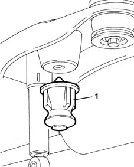

4420W10 rear suspension end buffer - replace with spring disconnected
- Path
- Procedures > 44 SUSPENSION AND WHEELS > 4420 REAR SUSPENSION > 4420W rear suspension protections > 4420W10 rear suspension end buffer - replace with spring disconnected
- Kind
- repair procedure (removal / refitting; the operation number is the code)
- Applies to
- all engines; all production periods
- Interactive page
- https://sloeber94.github.io/elrnDB-fMltpl/en/#/2891731
Applies to: all engines; all production periods
 Removing
Removing
 Refitting
Refitting1. Remove the rear suspension end of travel buffer.

Applies to: all engines; all production periods
Refitting
RemovingFit the new rear end of travel buffer.